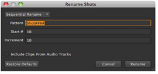

Once you’ve conformed your edit, you may want to rename clip instances on the timeline sequentially for clarity.
To rename clip instances:
| 1. | Select the clip instances to rename using the timeline or spreadsheet view. |
| 2. | Right-click on the timeline and select Editorial > Rename Shots. |
TIP: You can also navigate to Timeline > Rename Shots or use the Alt+Shift+/ keyboard shortcut.
The Rename Shots dialog displays.

| 3. | Select the rename type from the dropdown: |
• Simple Rename - all shots are replaced by the New Name specified.
• Find and Replace - a simple find and replace shot name. All selected shots containing the specified Find pattern are substituted with the Replace pattern.
• Sequential Rename - rename shots sequentially using the Pattern, Start #, and Increment fields.
• Match Sequence - allows you to select a sequence to copy shot names from, providing that they use the same clip instances. For example, renaming clip instances on a 30 second timeline to mirror the shot names from a 60 second timeline.
NOTE: You can only use sequences that reside in the same project and clip instances that have overlapping frame ranges.
• Clip Name - all shot names are replaced by the name of the source clip they reference. This option can be used to revert previous rename operations.
• Change Case - the case of all shot names is changed, as specified by the Case dropdown. For example, selecting Title Case capitalizes the first character of each word.
| 4. | Rename operations also accept token substitutions. The following tokens are recognized: |
|
Token |
Resolves to |
|
{clip} |
The name of the source clip referenced by the target clip instance. |
|
{event} |
The EDL event number associated with the target clip instance. |
|
{filename} |
The file name of the clip instance's source. |
|
{fps} |
The frame rate of the sequence containing the rename target. |
|
{sequence} |
The name of the sequence containing the rename target. |
|
{shot} |
The name of the clip instance. |
|
{track} |
The name of the track containing the rename target. |
| 5. | Enable Include Clips From Audio Tracks to rename audio clip instances as well as video clip instances. |
| 6. | Click Rename. |
The selected clip instances are renamed as specified.
|
|